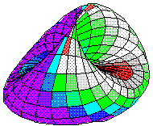
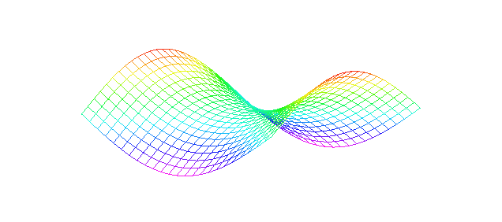

Game Theory
Conflict has been a central theme throughout human history. It arises whenever two or more individuals, with different values, compete to try to control the course of events. Game theory uses mathematical tools to study situations involving both conflict and cooperation.
The players in a game, who may be people or organizations, choose
from a list of options available to them - these choices are called strategies.
The
strategies chosen by the players lead to outcomes, which describe
the consequences of their choices. We assume that the players have preferences
for the outcomes: they like some more than others.
Game theory analyzes the rational choice of strategies - that
is strategies that lead to the preferred outcomes.
Game theory has been successfully applied to areas such as the military choices in warfare and in international crises, resource-allocation decisions in political campaigns, bargaining tactics in labor-management disputes, gambling theory, and statistics.
In the next section we present the short history of the subject. Then we present several examples of two-person zero-sum games, in which what one player wins the other player loses, so cooperation never benefits the players. We distinguish two different kinds of solutions to such games. Next we analyze some well-known games of partial conflict, in which the players can benefit from cooperation but may have strong incentives not to cooperate.
History
As early as the seventeenth century, such outstanding mathematicians as Christiaan Huygens (1629-1695) and Gottfried W. Leibniz (1646-1716) proposed the creation of a discipline that would make use of the scientific method to study human conflict and interactions. Throughout the nineteenth century, several leading economists created simple mathematical examples to analyze particular examples of competitive situations. The first general mathematical theorem in this subject was proved by the distinguished mathematician Ernst Zermelo (1871-1956) in 1912. It stated that any finite game with perfect information, such as tic-tac-toe, checkers or chess, has an optimal solution in pure strategies, which means that no randomization or secrecy is necessary. A game is said to have perfect information if at each stage of the play, every player is aware of all past moves by himself and others as well as all future choices that are allowed. This theorem is an example of an existence theorem: it demonstrates that there must exist a best way to play such a game, but it does not provide its construction that is a detailed plan for playing that game.
The mathematician Emile Borel (1871-1956) introduced the notion of a mixed, or randomized, strategy when he investigated some elementary duels around 1920. John von Neumann proved in 1928, that every two-person, zero-sum game must have optimal mixed strategies and an expected value for the game. His result was extended to the existence of equilibrium outcomes in mixed strategies for multiperson games that are either constant-sum or variable-sum by John F. Nash Jr. (1931-), in 1951.
Modern game theory dates from the famous minimax theorem that was proven by von Neumann. He gradually expanded his work in game theory, and with co-author Oskar Morgenstern, he wrote the classic text Theory of Games and Economic Behaviour (1944). They introduced the first general model and solution concept for multiperson cooperative games, which are primarily concerned with coalition formation (economic, voting blocs, and military alliances) and the resulting distribution of gains or losses.
The Nobel Memorial Prize in Economics was awarded to three game theorists in 1994.The recipients were John C. Harsanyi (1920- ) of the University of California, Berkeley, John F. Nash of Princeton University, and Reinhard Selten (1930- ) of the University of Bonn, Germany.
Game Theory - The Minimax Theorem
The starting point of the mathematical theory of games is the situation in which the outcome of the game is determined by the strategies employed by the players. The notion of a minimax point, a set of optimal strategies for all players in the game, is what makes this a theory and not a heuristic. When the payoffs for all players in a game add up to zero, this is called a "zero-sum situation". A payoff matrix is used to express the overall situation. The entries in the matrix are the payoffs to the "row player" and the "column player". A "risk-averse" decision is one that forsakes possible gains in order to avoid incurring unnecessary losses. Examples of payoff matrices will follow.
A combination of actions, in which the maximum of the row minimax equals the minimum of the column maxima is called an equilibrium point of the game. This is because by choosing these actions the two players can guarantee themselves a certain minimal payoff - regardless of what their opponent chooses to do. The equilibrium solution is "bulletproof", or stable, in the sense that either player can announce his choice in advance to the opponent, secure in the knowledge that the opponent cannot make use of this information to get a better payoff. An equilibrium decision point is often termed a saddle point. Such a point is often also known as a minimax point. What's important about a saddle point is that it represents a decision by two players that neither can improve upon by unilaterally departing from it.

Saddle Point
The best choice for each player is at the saddle point, which is called a "solution" to the game in pure strategies. The optimal choice for each player is to always take his/her saddle point decision, if such an option exists.
A game of "pure strategy" consists of three interrelated components:
Actions: At each stage of play the players choose their course of action from a set of possible decisions, which are not usually the same for each player. Often, the players must make their decisions without knowledge of the actions chosen by the other players. We will assume that each player has only a finite number of possible decisions, although some interesting and important games make use of decisions sets, which are infinite.
Payoffs: After the decisions have been made, each player receives a certain payoff measured in a common unit for all players.
In game theory, the way out of what we might term the "no-saddle point dilemma" is to invent a new notion of what we mean by rational behavior. Without a saddle point all bets are off, since we have then lost our notion of what it means to be "rational". It turns out that the way to recapture this kind of "immunity from disclosure" is to act in such a way that you don't even know yourself what you're going to do until you do it ("no-knowledge")!
The pivotal result in the mathematical theory of games was John von Neumann's Minimax Theorem in 1928. It asserts that for every two-person, zero-sum game there is an optimal strategy for each player. The Minimax Theorem says that the way to recapture rationality is to use strategies that randomize a player's choice over all possible actions. The value of the game is the optimal payoff. Von Neumann's Minimax Theorem makes the strong assertion that there always exists at least one mixed strategy for each player, such that the average payoff to each player is the same when he uses these strategies.
Minimax Theorem: For every two-person, zero-sum game there exists a mixed strategy for each player such that the expected payoff for both is the same value V when the players use these strategies. Furthermore, V is the best payoff each can expect to receive from a play of the game; hence these mixed strategies are the optimal strategies for the two players to employ.
"As far as I can see, there could be no theory of games… without that theorem… I thought there was nothing worth publishing until the 'Minimax Theorem' was proved," remarked von Neumann.
The Minimax Theorem expresses the idea of "rational action". A view of rationality we might colloquially describe as "hope for the best, prepare for the worst." John Nash proved a theorem that generalizes the Minimax Theorem to the case of nonzero-sum games involving two or more players when all the players are in direct competition - noncooperative games.
Nash's Theorem: Any n-person, uncooperative game (zero-sum or nonzero-sum) for which each player has a finite number of pure strategies has at least one equilibrium set of strategies.
There are three important aspects of this theorem: (1) it generalizes the Minimax Theorem in the sense that it establishes the existence of an equilibrium solution for both zero-sum and nonzero-sum games, (2) it shows that there may be more than one such solution, and (3) it extends to the case of any finite number of players.
Games
"The Prisoner's Dilemma": This is a classic two-player nonzero-sum game, which illustrates many points of game theory.
In this game, the two players are partners in a crime who have been captured by the police. Each suspect is placed in a separate cell and offered the opportunity to confess to the crime.
We will now set up the payoff matrix (as discussed earlier).
In this case, the actions of the first player form the rows and the actions
of the second player form the columns. The entries in the matrix are two
numbers representing the payoff to the first and second player respectively.
| Not Confess | Confess | |
| Not confess | 5, 5 | 0, 10 |
| Confess | 10, 0 | 1, 1 |
This game is a simple representation of a variety of important aspects
of game theory. No matter what a suspect believes his partner is going
to do, it is always best to confess. If the partner in the other cell is
not confessing, it is possible to get 10 instead of 5 as a payoff. If the
partner in the other cell is confessing, it is possible to get 1
instead of 0. Yet the pursuit of individually sensible behavior results
in each player getting only 1 as a payoff, much less than the 5 which they
would get if neither confessed. This conflict between the pursuit of individual
goals and the common good is at the heart of many game theoretic problems.
"Weebles vs. Wobbles": The following is an example of a zero-sum game and illustrates how what seems "rational behavior" is not always so. It is a simplified model of price competition as can be studied in economics.
Let us imagine two companies that sell widgets, the Weeble Co and Wobble Inc. Each company has a set cost of $5,000 per year, regardless of how many widgets they sell or if they sell any at all.
The two companies are competing for the same market and each firm must choose a high price ($2 per widget) or a low price ($1 per widget). Here are the rules of the game:
1) At a price of $2 - 5,000 widgets can be sold for a total revenue of $10,000. (These numbers represent the entire widget industry, both companies).
2) At a price of $1 - 10,000 widgets can be sold for a total revenue of $10,000.
3) If both companies charge the same price, they split the sales evenly between them.
4) If one company charges a higher price, the company with the lower price sells the whole amount and the company with the higher price sells nothing.
5) Payoffs are profits - revenue minus fixed cost ($5,000 as mentioned).
Here is the payoff matrix for these two companies:
Weeble Co
| Price = $1 | Price = $2 | ||
| Wobble Inc. | Price = $1 | 0, 0 | 5000, -5000 |
| Price = $2 | -5000, 5000 | 0, 0 |
"Head Over Tails": This game is another example of a zero-sum game but, unlike the Weeble-Wobble example, does not lend itself to a pure strategy. Rather, its solution is a mixed-strategy, which we discussed earlier.
The two players of this game are Jack and Jill just prior to their trip on the hill. Each has a sack of pennies. On each turn of the game, they will reveal pennies simultaneously, and each player may show either a head (Abraham Lincoln's head, to be precise) or a tail (the Lincoln monument). If both show the same side, Jill wins the penny from Jack; or, if they show different sides, Jack wins the penny from Jill. Here is the payoff matrix for this game:
Jack
| Head | Tail | ||
| Jill | Head | 1, -1 | -1, 1 |
| Tail | -1, 1 | 1, -1 |
It would at first appear that this game does not have a dominant strategy (or unique solution). The minimum payoff for each of the two pure strategies is the same: -1. But this is not the whole story. This game actually has more than two strategies. In addition to the two obvious strategies (always showing a head or always showing a tail), a player can "randomize" his/her strategy by offering either a head or a tail, at random, with specified probabilities. Such a randomized strategy is called a mixed-strategy and was explained in von Neumann's Minimax Theorem.
The solution for this particular game is to offer heads or tails with the random probability of 0.5 each way. Here is the reasoning: if Jack offers heads with any probability greater than 0.5, then Jill can have better than even odds of winning by offering heads with probability of 1 (i.e. always) and guaranteeing that more than half the time the two coins will match. On the other hand, if Jack offers heads with any probability less than 0.5, then Jill can guarantee statistical success by offering tails with probability 1. The only way Jack can get even odds of winning is to choose a randomized strategy with probability 0.5, and there is no way Jill can get better than even odds. The 0.5 probability maximizes the minimum payoff over all pure or mixed strategies (and there are an infinite number of mixed strategies with every probability between 0 and 0.5).
Parting Thoughts (and Links)
As we've shown, Game Theory is more than just a theory of games. What it ultimately aims to do is lend insight into the behavior of people and groups in complex situations. What is at the heart of the games above is "rational behavior" and whether or not it can be defined as a certain strategy in a given situation (or game).
The assumption is that each player in a game will try to maximize his or her gains and minimize his or her losses. This hypothesis serves two purposes. First, it narrows the range of possible actions - absolutely rational behavior is more predictable than irrational behavior. Second, it provides a criterion for evaluating the efficiency of a system. If a given process leads to a reduction in the rewards to some people while not producing an equal compensating reward to other people, then the net production is negative and "bad". Pollution can be seen as an example of just such a "bad" example. Put plainly, the costs outweigh the benefits.
The examples of games we chose ran the gamut from economic to sociological to just plain childish. The idea that Game Theory applies to a wide range of subjects should be obvious: whenever there is conflict (and when isn't there?), Game Theory can formalize the relationships involved and the options available. Please see our brief synopses of some of The Applications of Game Theory for more examples.
To learn more about Game Theory and politics, click
here.